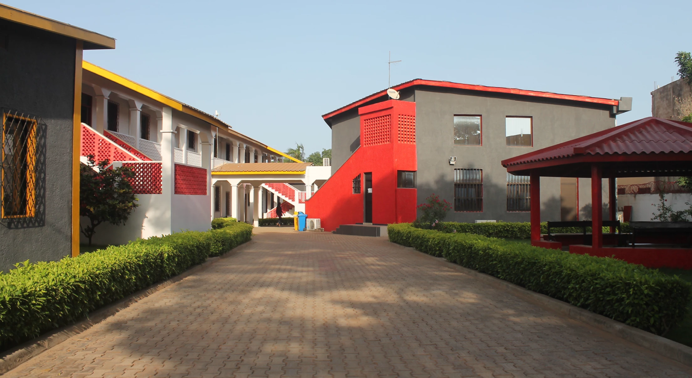

Une génération en action
Energy Generation est une organisation panafricaine qui encourage les jeunes Africains à relever les défis les plus pressants de leur génération (énergie, agriculture, santé, etc.) à travers l'entrepreneuriat et la technologie. Energy Generation vise à soutenir et à promouvoir les innovations technologiques et entrepreneuriales afin d'identifier, de développer et de diffuser largement les solutions pratiques « made in Africa ». Mais avant tout, Energy Generation est une plate-forme centrée sur l'humain qui offre aux individus des possibilités de libérer et d’exprimer toute leur créativité.
VISION
Permettre l'émergence d'une nouvelle génération africaine en mesure de relever le défi de la dignité humaine sur le continent africain et au-delà.
MISSION
Révolutionner l'accès à l'éducation, à l'accompagnement et au financement, en construisant un écosystème entrepreneurial solide où les jeunes africains peuvent prospérer et développer des entreprises hors du commun.
NOS PROGRAMMES
Au sein de nos Business Schools, théorie et pratique se rencontrent pour transformer des idées novatrices en entreprises viables. En tant qu'étudiant porteur de projet, vous suivrez une formation diplômante en entrepreneuriat et aurez l’occasion de bénéficier de l’expérience pratique des professionnels issus d'entreprises leader mondiales de leur secteur.Au sein de nos écoles, les porteurs de projet bénéficient des installations du laboratoire pour développer leur prototype, ainsi que d’un accompagnement personnalisé pour structurerleur projet entrepreneurial.
la Business & Energy School
la Business & Healthcare School
La Business & Agri School
LA FORMATION ENTREPRENEURIAT SOLAIRE
Parce que le solaire représente une véritable opportunité de création d'emplois pour les jeunes tout en participant au développement socio-économique des zones rurales africaines notamment, Energy Generation a créé un programme de dix mois pour former puis accompagner des entrepreneurs du solaire.Quel que soit votre niveau d'études actuel, la Formation Entrepreneuriat Solaire vous propose un programme sur mesure pour vous garantir une formation répondant parfaitement à vos besoins et à vos projets d'avenir.
La formation solaire
L’Energy Generation Incubator et le Co-working Space accueillent des start-ups prometteuses dans le domaine de l'énergie, mais pas seulement. Les services d'incubation incluent un coaching personnalisé, avec formation et mentorat, ainsi qu’un soutien dans les activités quotidiennes et les défis rencontrés. Afin de soutenir le développement d'un écosystème entrepreneurial international, l'incubateur accueillera des projets issus de l’Academy, mais aussi plusieurs projets de milieux et de pays africains différents.
L Energy Space
ils croient en nous